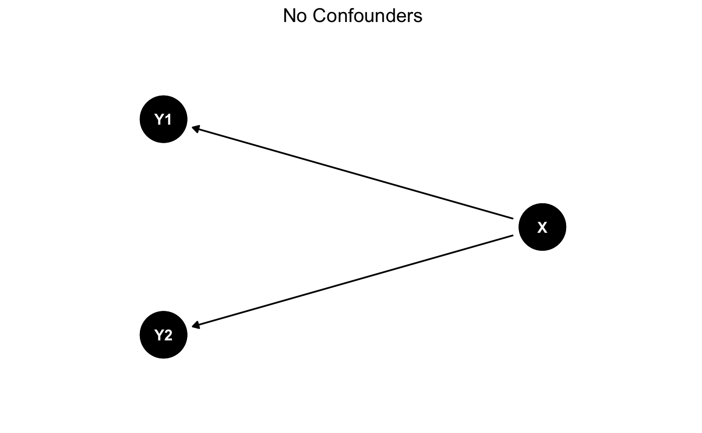
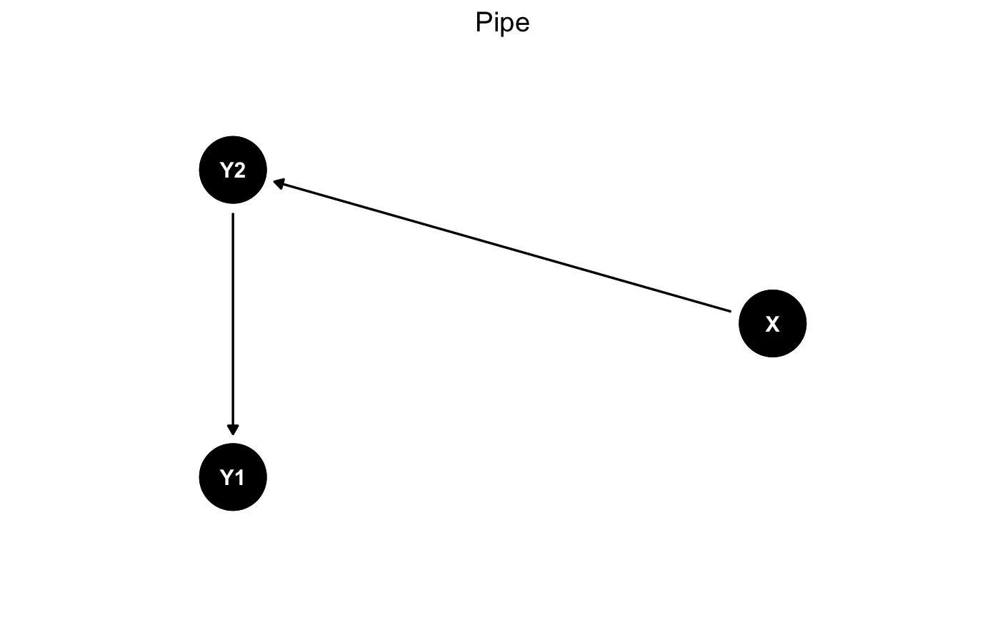
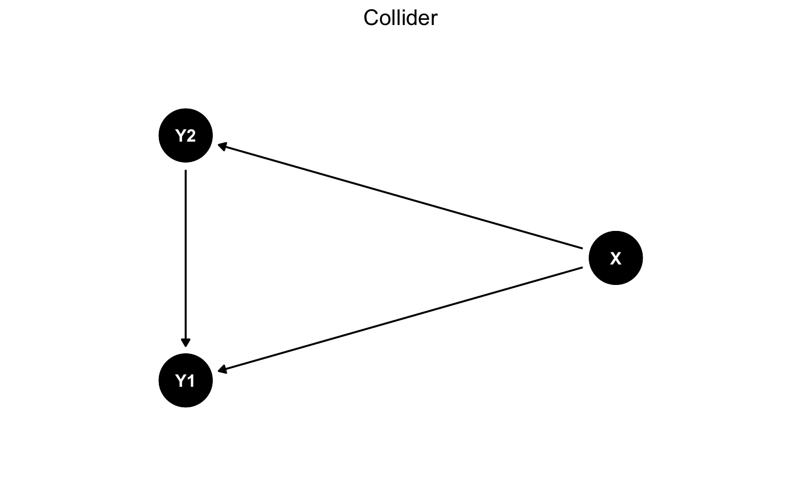
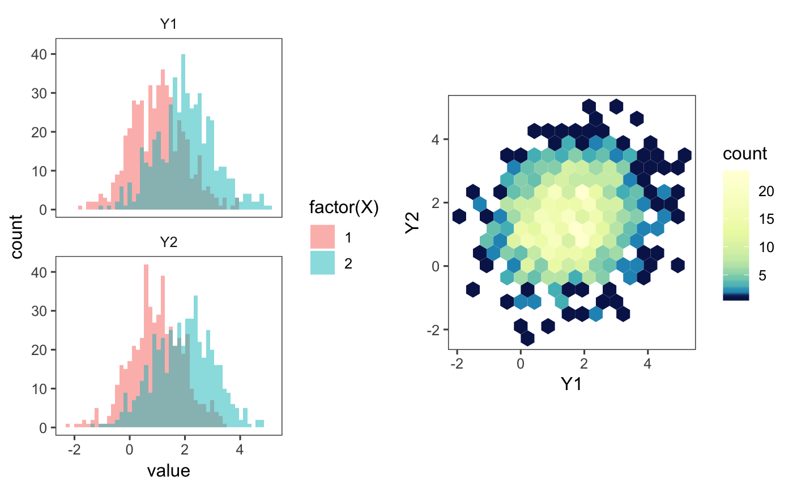
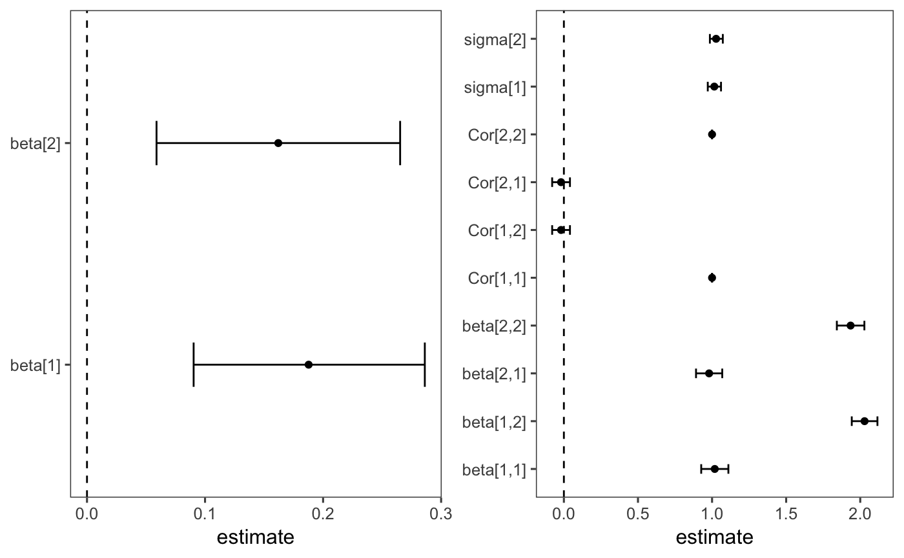
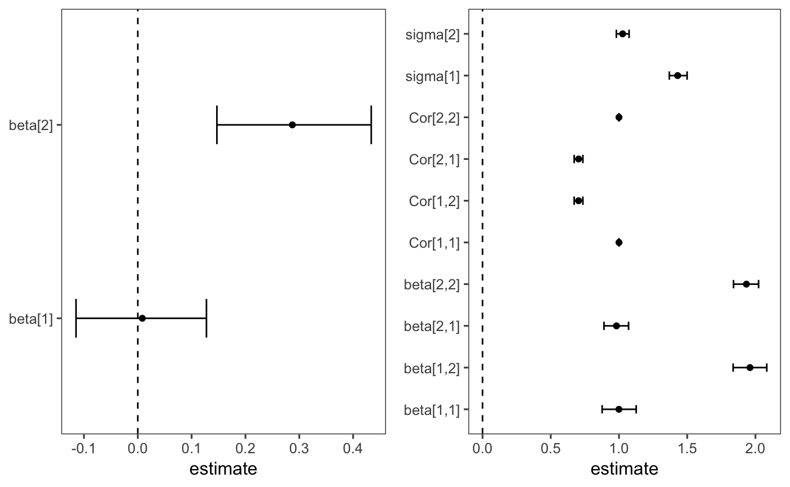
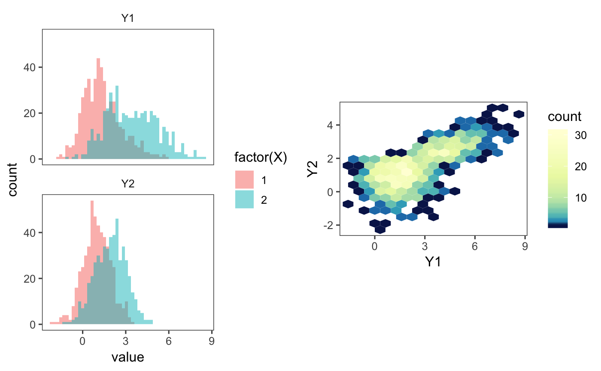
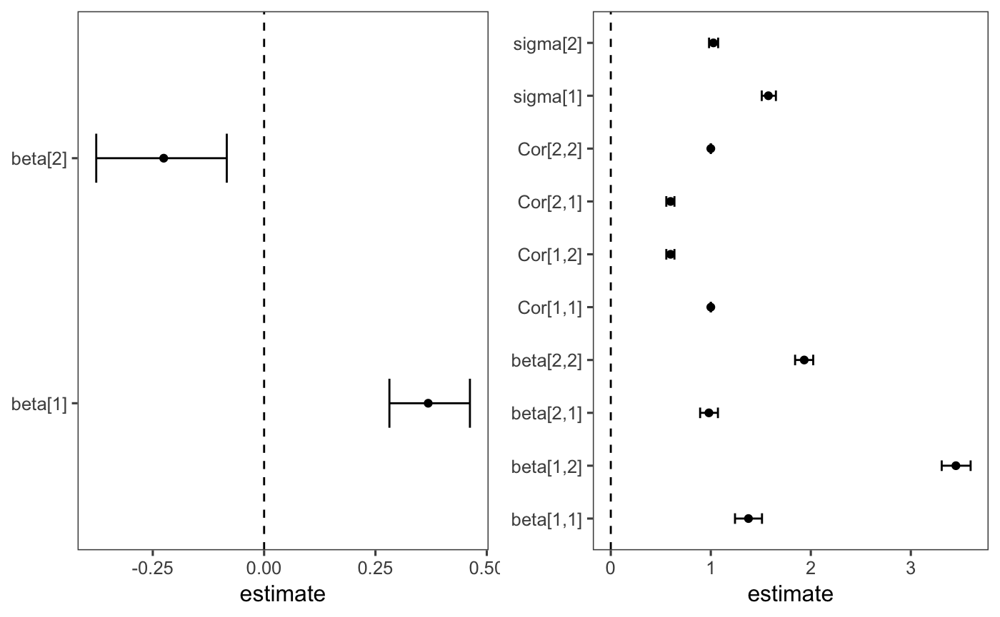

Confounders and Biases
Christof Seiler
Maastricht UniversitySource:
vignettes/Confounders.Rmd
Confounders.RmdPrerequisites
Install packages.
pkgs_needed = c("devtools","tidyverse","magrittr",
"RColorBrewer", "cowplot", "ggthemes","dagitty","MASS",
"rstan","ggdag")
letsinstall = setdiff(pkgs_needed, installed.packages())
if (length(letsinstall) > 0) {
source("http://bioconductor.org/biocLite.R")
biocLite(letsinstall)
}Load packages.
Confounders Analysis
Currently the following confounders are implemented:
- No confounder
- Collider
- Pipe
Simulate Data
Generate data and plot DAG for a given confounder.
plot_dag = function(dag, title_str) {
expand_plot = function(expand_x = expand_scale(c(.1, .1)),
expand_y = expand_scale(c(.1, .1))) {
list(
ggplot2::scale_x_continuous(expand = expand_x),
ggplot2::scale_y_continuous(expand = expand_y)
)
}
ggdag(dag, layout = "circle") +
geom_dag_point() +
geom_dag_text() +
theme_dag_blank() +
expand_plot(expand_x = expand_scale(c(.4, .4)),
expand_y = expand_scale(c(.4, .4))) +
ggtitle(title_str) +
theme(plot.title = element_text(hjust = 0.5))
}
# no confounders
set.seed(0xdada)
tb_sim = tibble(
X = c(rep(1,500), rep(2,500)),
Y2 = X + rnorm(1000),
Y1 = X + rnorm(1000)
)
dag = dagify(Y1 ~ X, Y2 ~ X)
plot_dag(dag, "No Confounders")
ggsave(filename = paste0("dag_no_confounder.pdf"), width = 3, height = 2.5)
# pipe
set.seed(0xdada)
tb_sim_pipe = tibble(
X = c(rep(1,500), rep(2,500)),
Y2 = X + rnorm(1000),
Y1 = Y2 + rnorm(1000)
)
dag_pipe = dagify(Y2 ~ X, Y1 ~ Y2)
plot_dag(dag_pipe, "Pipe")
ggsave(filename = paste0("dag_pipe.pdf"), width = 3, height = 2.5)
# collider
set.seed(0xdada)
tb_sim_collider = tibble(
X = c(rep(1,500), rep(2,500)),
Y2 = X + rnorm(1000),
Y1 = X + rnorm(1000) + if_else(Y2 > 2, tb_sim$Y2, 0)
)
dag_collider = dagify(Y1 ~ X, Y2 ~ X, Y1 ~ Y2)
plot_dag(dag_collider, "Collider")
Prepare Helper Functions
Prepare visualize data function.
visualize_data = function(tb_sim) {
tb_long = tb_sim %>% gather(key, value, Y1, Y2)
p1 = ggplot(tb_long, aes(value, fill = factor(X))) +
geom_histogram(bins = 50, alpha= 0.5, position = "identity") +
facet_wrap(~key, nrow = 2)
colorscale = scale_fill_gradientn(
colors = rev(brewer.pal(9, "YlGnBu")),
values = c(0, exp(seq(-5, 0, length.out = 100)))
)
p2 = ggplot(tb_sim, aes(Y1, Y2)) +
geom_hex(bins = 16) +
colorscale +
coord_fixed()
plot_grid(p1, p2)
}Prepare fit logistic model function.
## /*
## * Logistic regression with index notation
## * Author: Christof Seiler
## */
## data {
## int<lower=1> p;
## int<lower=0> n;
## int<lower=0,upper=1> y[n];
## row_vector[p] x[n];
## }
## parameters {
## vector[p] beta;
## }
## model {
## for (i in 1:n)
## y[i] ~ bernoulli_logit(x[i] * beta);
## }fit_plot_prediction_model = function(tb_sim) {
stan_data = list(
p = nlevels(factor(tb_sim$X)),
n = nrow(tb_sim),
y = tb_sim$X-1,
x = tb_sim %>% dplyr::select(c(Y1, Y2))
)
model = stan_model(file = "multivariate_predictor.stan",
model_name = "multivariate_predictor_index")
fit_mcmc = sampling(model, pars = "beta",
data = stan_data, iter = 1000, warmup = 500,
chains = 4, cores = 4, seed = 0xdada)
fit_mcmc
tb_pred = tidy(fit_mcmc, conf.int = TRUE, conf.level = 0.95)
tb_pred
ggplot(tb_pred, aes(estimate, term)) +
geom_point() +
geom_errorbarh(aes(xmin = conf.low, xmax = conf.high), height = 0.2) +
geom_vline(xintercept = 0, linetype = "dashed") +
theme(axis.title.y = element_blank())
}Prepare fit multivariate poisson response model function.
## /*
## * Seemingly unrelated regression with index notation
## * Author: Christof Seiler
## */
## data {
## int<lower=1> d;
## int<lower=1> p;
## int<lower=0> n;
## vector[d] y[n];
## int<lower=1,upper=p> x[n];
## }
## parameters {
## matrix[d,p] beta;
## vector<lower=0>[d] sigma;
## cholesky_factor_corr[d] L_Omega;
## }
## model {
## vector[d] mu[n];
## matrix[d,d] L_Sigma;
## for (i in 1:n) {
## for (j in 1:d)
## mu[i,j] = beta[j,x[i]];
## }
## L_Sigma = diag_pre_multiply(sigma, L_Omega);
## y ~ multi_normal_cholesky(mu, L_Sigma);
## }
## generated quantities {
## matrix[d,d] Cor;
## Cor = L_Omega * L_Omega';
## }fit_plot_response_model = function(tb_sim) {
stan_data = list(
d = 2,
p = nlevels(factor(tb_sim$X)),
n = nrow(tb_sim),
y = tb_sim %>% dplyr::select(c(Y1, Y2)),
x = tb_sim$X
)
model = stan_model(file = "multivariate_response.stan",
model_name = "multivariate_response_index")
fit_mcmc = sampling(model, pars = c("beta", "sigma", "Cor"),
data = stan_data, iter = 1000, warmup = 500,
chains = 4, cores = 4, seed = 0xdada)
fit_mcmc
tb_resp = tidy(fit_mcmc, conf.int = TRUE, conf.level = 0.95)
ggplot(tb_resp, aes(estimate, term)) +
geom_point() +
geom_errorbarh(aes(xmin = conf.low, xmax = conf.high), height = 0.2) +
geom_vline(xintercept = 0, linetype = "dashed") +
theme(axis.title.y = element_blank())
}No Confounders
Fit both models and plot results.

## ld: warning: text-based stub file /System/Library/Frameworks//CoreFoundation.framework/CoreFoundation.tbd and library file /System/Library/Frameworks//CoreFoundation.framework/CoreFoundation are out of sync. Falling back to library file for linking.
## ld: warning: text-based stub file /System/Library/Frameworks//CoreFoundation.framework/CoreFoundation.tbd and library file /System/Library/Frameworks//CoreFoundation.framework/CoreFoundation are out of sync. Falling back to library file for linking.
Pipe
Fit both models and plot results.

## ld: warning: text-based stub file /System/Library/Frameworks//CoreFoundation.framework/CoreFoundation.tbd and library file /System/Library/Frameworks//CoreFoundation.framework/CoreFoundation are out of sync. Falling back to library file for linking.
## ld: warning: text-based stub file /System/Library/Frameworks//CoreFoundation.framework/CoreFoundation.tbd and library file /System/Library/Frameworks//CoreFoundation.framework/CoreFoundation are out of sync. Falling back to library file for linking.
Collider
Fit both models and plot results.

## ld: warning: text-based stub file /System/Library/Frameworks//CoreFoundation.framework/CoreFoundation.tbd and library file /System/Library/Frameworks//CoreFoundation.framework/CoreFoundation are out of sync. Falling back to library file for linking.
## ld: warning: text-based stub file /System/Library/Frameworks//CoreFoundation.framework/CoreFoundation.tbd and library file /System/Library/Frameworks//CoreFoundation.framework/CoreFoundation are out of sync. Falling back to library file for linking.
Session Info
## R version 3.5.1 (2018-07-02)
## Platform: x86_64-apple-darwin15.6.0 (64-bit)
## Running under: macOS 10.14.3
##
## Matrix products: default
## BLAS: /Library/Frameworks/R.framework/Versions/3.5/Resources/lib/libRblas.0.dylib
## LAPACK: /Library/Frameworks/R.framework/Versions/3.5/Resources/lib/libRlapack.dylib
##
## locale:
## [1] en_US.UTF-8/en_US.UTF-8/en_US.UTF-8/C/en_US.UTF-8/en_US.UTF-8
##
## attached base packages:
## [1] stats graphics grDevices utils datasets methods base
##
## other attached packages:
## [1] hexbin_1.27.2 bindrcpp_0.2.2 ggdag_0.1.0
## [4] rstan_2.18.1 StanHeaders_2.18.0 MASS_7.3-51
## [7] dagitty_0.2-2 ggthemes_4.0.1 cowplot_0.9.3
## [10] RColorBrewer_1.1-2 broom_0.5.0 magrittr_1.5
## [13] forcats_0.3.0 stringr_1.3.1 dplyr_0.7.7
## [16] purrr_0.2.5 readr_1.1.1 tidyr_0.8.2
## [19] tibble_1.4.2 ggplot2_3.1.0 tidyverse_1.2.1
## [22] BiocStyle_2.8.2
##
## loaded via a namespace (and not attached):
## [1] nlme_3.1-137 matrixStats_0.54.0 fs_1.2.6
## [4] lubridate_1.7.4 httr_1.3.1 rprojroot_1.3-2
## [7] tools_3.5.1 backports_1.1.2 R6_2.3.0
## [10] lazyeval_0.2.1 colorspace_1.3-2 withr_2.1.2
## [13] tidyselect_0.2.5 gridExtra_2.3 prettyunits_1.0.2
## [16] processx_3.2.0 curl_3.2 compiler_3.5.1
## [19] cli_1.0.1 rvest_0.3.2 xml2_1.2.0
## [22] desc_1.2.0 labeling_0.3 bookdown_0.7
## [25] scales_1.0.0 callr_3.0.0 pkgdown_1.3.0
## [28] commonmark_1.7 digest_0.6.18 rmarkdown_1.10
## [31] base64enc_0.1-3 pkgconfig_2.0.2 htmltools_0.3.6
## [34] rlang_0.3.0.1 readxl_1.1.0 rstudioapi_0.8
## [37] farver_1.1.0 bindr_0.1.1 jsonlite_1.5
## [40] inline_0.3.15 loo_2.0.0 Rcpp_0.12.19
## [43] munsell_0.5.0 viridis_0.5.1 stringi_1.2.4
## [46] yaml_2.2.0 ggraph_1.0.2 pkgbuild_1.0.2
## [49] plyr_1.8.4 grid_3.5.1 ggrepel_0.8.0
## [52] parallel_3.5.1 crayon_1.3.4 lattice_0.20-35
## [55] haven_1.1.2 hms_0.4.2 knitr_1.20
## [58] ps_1.2.0 pillar_1.3.0 igraph_1.2.2
## [61] boot_1.3-20 codetools_0.2-15 stats4_3.5.1
## [64] glue_1.3.0 evaluate_0.12 V8_1.5
## [67] modelr_0.1.2 tweenr_1.0.1 cellranger_1.1.0
## [70] gtable_0.2.0 assertthat_0.2.0 xfun_0.4
## [73] ggforce_0.1.3 tidygraph_1.1.1 roxygen2_6.1.1
## [76] viridisLite_0.3.0 memoise_1.1.0 units_0.6-2